Visão geral
O WeLuvCode (WLC) analisa os repositórios de um workspace e traduz o
resultado em um indicador único, o Score de Engenharia, acompanhado da
documentação técnica que a plataforma gera a partir do próprio código.
O Score de Engenharia
O Score vai de 0 a 10 e é a média ponderada de quatro dimensões:
| Dimensão |
O que observa |
| Fluxo |
ritmo e continuidade da entrega |
| Qualidade da Engenharia |
características do código produzido |
| Eficiência |
aproveitamento do esforço de engenharia |
| Riscos |
exposições identificadas na base |
O Score só é calculado quando há dados suficientes: o produto exige pelo menos
três das quatro dimensões. Enquanto isso não acontece, a tela do repositório
informa que o cálculo ainda está em andamento, em vez de exibir um número
incompleto.
As dimensões não pesam igual, cada uma reúne vários indicadores, e alguns
indicadores podem reprovar a dimensão inteira sozinhos. Isso está detalhado em
Métricas, que também explica o que o Score deliberadamente não
mede.
A hierarquia
O produto organiza tudo em três níveis, e o Score existe em cada um deles:
Workspace → Contexto → Repositório
a empresa o domínio o código
Um contexto é um agrupamento lógico de repositórios por produto, domínio ou
squad. No workspace de demonstração há dois contextos, Backend e Web Frontend,
somando sete repositórios.
Onde cada coisa fica
A barra lateral esquerda é fixa e se adapta ao nível em que você está:
- Visão Geral, Contextos e Repositórios — navegação principal
- Ferramentas — Navigate
- People — Onboarding Dev e Job Description
No rodapé fica o seu usuário; no topo, o seletor de contexto e repositório.
Workspace e "Organização" são a mesma coisa. O produto usa Workspace na
maior parte das telas — no Score, no escopo do Navigate, nos filtros — mas o
seletor da barra lateral rotula esse mesmo nível como Organização. Esta
documentação usa Workspace, que é o termo predominante na interface.
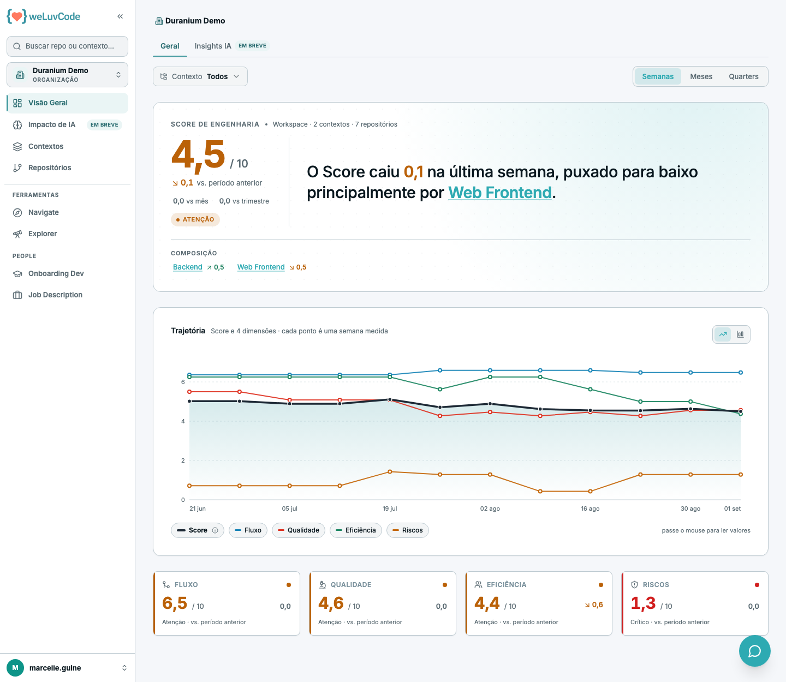
Acesso
Entrar
A tela de login aceita dois caminhos: e-mail e senha, ou Entrar com SSO para
workspaces com autenticação corporativa configurada.
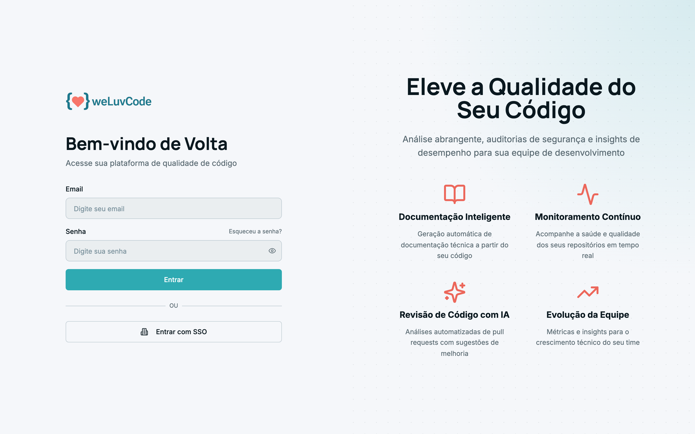
Recuperar a senha
O link Esqueceu a senha?, ao lado do campo de senha, leva ao formulário de
recuperação. Você informa o e-mail e recebe um link para definir a nova senha.
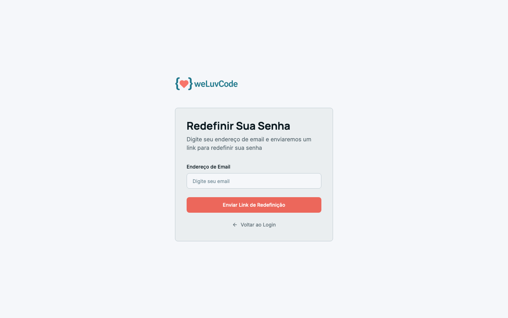
Os links de redefinição têm validade. Se o link já tiver sido usado ou expirado,
o produto explica o que houve e oferece pedir um novo sem voltar ao início:
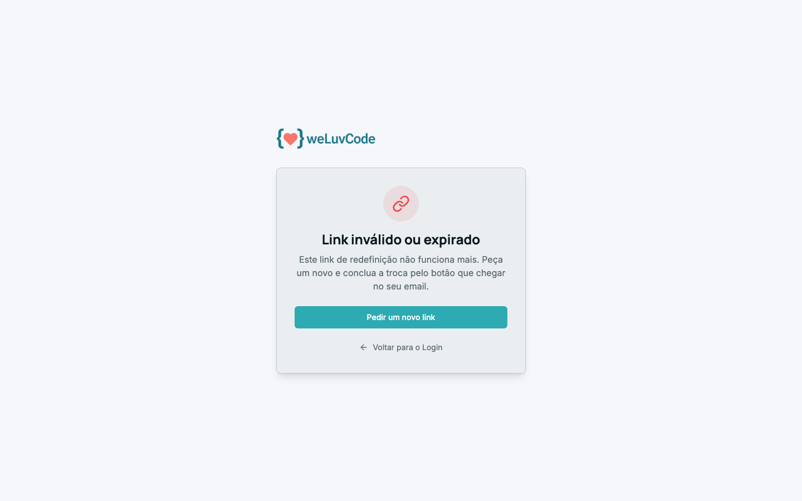
Uma conta, um workspace
Cada e-mail tem acesso a um único workspace. Não existe troca de workspace
dentro do produto: para trabalhar em outro, é preciso uma conta com acesso a ele.
O seletor no topo da barra lateral, logo abaixo da busca, não troca de
workspace — ele navega entre os contextos e os repositórios do workspace em
que você já está. É por ele que se desce da visão geral para um contexto
específico, e de um contexto para um repositório.
Métricas
Como o Score é construído: de onde vem cada número do painel. O objetivo é que você
consiga ler qualquer valor e saber também o que ele não afirma.
O que o Score responde — e o que não responde
O Score de Engenharia é um resumo da saúde do processo de engenharia de um
repositório em um período, numa escala de 0 a 10.
Ele responde a uma pergunta operacional: este repositório entrega com
previsibilidade, revisão e conhecimento distribuído?
Ele não responde se o produto é bom, se o time é bom ou se o prazo será
cumprido. É um resumo de processo, não uma nota de pessoas nem de produto.
A cascata
contexto → repositório → 1 Score → 4 dimensões → 17 indicadores
O Score existe por repositório. O contexto agrega o Score dos seus repositórios;
nenhum indicador é recalculado no agrupamento.
As quatro dimensões e seus pesos
| Dimensão |
Peso |
O que observa |
Indicadores |
| Fluxo de Entrega |
30% |
ritmo e previsibilidade da entrega: lead time, taxa de entrega, trabalho em andamento, tempo até a primeira revisão |
5 |
| Qualidade da Engenharia |
30% |
disciplina técnica: testes, tamanho das entregas, Profundidade de Revisão, retrabalho |
7 |
| Eficiência do Time |
20% |
distribuição do trabalho: quanto do código e das revisões se concentra em uma pessoa |
2 |
| Riscos Organizacionais |
20% |
dependência de pessoas e trabalho travado: Bus Factor, Concentração de Conhecimento, Entregas de Longa Duração |
3 |
Entrega e qualidade valem 60% somadas; distribuição do time e risco
organizacional completam os 40% restantes.
Como o cálculo funciona
Antes dos detalhes, o caminho completo de um número. Seguindo o tempo de
ciclo do repositório django, do valor medido até o Score:
2h21m valor medido no período
↓ comparado com os limiares do Lead Time de Entrega (até 24h / 24h–168h / acima de 168h)
SAUDÁVEL a faixa em que o valor caiu
↓ cada faixa vale um número fixo de pontos
1 ponto saudável = 1 · atenção = 0,5 · crítico = 0
↓ multiplicado pelo peso do indicador dentro da dimensão (Lead Time de Entrega pesa 3)
3 contribuição deste indicador
↓ somado aos outros 4 indicadores de Fluxo e dividido pela soma dos pesos
6,4 nota da dimensão Fluxo de Entrega
↓ multiplicado pelo peso da dimensão no Score (Fluxo vale 30%)
6,5 Score de Engenharia do repositório
Cada seta é um dos passos abaixo.
Passo 1 — o valor medido vira uma faixa
Cada indicador tem limiares próprios, que definem três faixas. O valor
medido é comparado com esses limiares e cai em exatamente uma delas. É só isso
que define se um indicador está saudável: o valor medido estar dentro do
limiar daquele indicador.
| Faixa |
Quando o indicador recebe |
Significado |
| Saudável |
o valor está dentro do limiar esperado |
fluxo sustentável nesse aspecto |
| Atenção |
o valor passou do limiar saudável, mas não do crítico |
fora do ideal, sem impedir a entrega |
| Crítico |
o valor passou do segundo limiar |
sinal que costuma explicar atrasos e incidentes |
Os limiares mudam de indicador para indicador, e a direção também. Alguns são
"menor é melhor", outros "maior é melhor", e um é faixa fechada, onde exceder
também é sinal:
| Indicador |
Saudável |
Atenção |
Crítico |
| Lead Time de Entrega (menor é melhor) |
até 24h |
24h – 168h |
acima de 168h |
| Disciplina de Testes (maior é melhor) |
60% ou mais |
30% – 60% |
abaixo de 30% |
| Profundidade de Revisão (faixa fechada) |
2 a 10 comentários |
1 a 2 |
menos de 1 |
Por isso um valor sozinho não diz nada: 2 comentários por entrega é saudável em
Profundidade de Revisão, enquanto 2 pessoas em Bus Factor é atenção. Os limiares
de todos os indicadores estão em Os indicadores, um a um.
Passo 2 — a faixa vira pontos
A faixa vale um número fixo de pontos, e é para isso que os pontos servem:
eles são a moeda comum que permite somar indicadores de naturezas diferentes —
horas, percentuais, contagens de pessoas — dentro de uma mesma dimensão.
| Faixa |
Pontos |
| Saudável |
1 |
| Atenção |
0,5 |
| Crítico |
0 |
Só existem esses três valores. Um indicador nunca vale 0,8 nem 0,3, e não há
gradação dentro da faixa: estar por pouco ou por muito dentro dela dá o mesmo
resultado: um lead time de 2h e outro de 23h valem 1 ponto igualmente.
Passo 3 — os pontos viram a nota da dimensão
Aqui aparece a escala contínua. Cada ponto é multiplicado pelo peso do seu
indicador, e a média ponderada vira uma nota de 0 a 10:
nota da dimensão = (soma de pontos × peso ÷ soma dos pesos) × 10
Nem todo indicador pesa igual dentro da sua dimensão: Lead Time de Entrega e Taxa
de Entrega pesam 3, enquanto Arquivos Mais Alterados pesa 1.
Indicador sem dado sai da conta. A ausência nunca é tratada como zero — o
indicador é retirado do numerador e do denominador.
Exemplo real
Fluxo de Entrega do repositório django, com os valores da aba Métricas:
| Indicador |
Valor medido |
Faixa |
Pontos |
Peso |
Pontos × peso |
| Lead Time de Entrega |
2h21m |
saudável |
1 |
3 |
3 |
| Taxa de Entrega |
15,30 PRs/semana |
saudável |
1 |
3 |
3 |
| Tempo até 1ª Revisão |
19h28m |
atenção |
0,5 |
2 |
1 |
| Trabalho em Andamento (WIP) |
7,10 PR/pessoa |
crítico |
0 |
2 |
0 |
| Novo vs. Manutenção |
1,49% |
crítico |
0 |
1 |
0 |
Soma da última coluna: 7. Soma dos pesos: 11.
7 ÷ 11 = 0,636 → × 10 = 6,4
É exatamente a nota exibida no painel. Repare que a nota é contínua — 6,4 —
embora nenhum indicador tenha valido 0,64.
Passo 4 — as notas viram o Score
O Score é a média das notas das dimensões, ponderada pelos pesos de cada uma:
Score = soma (nota da dimensão × peso) ÷ soma dos pesos
Seguindo o mesmo repositório, com as quatro notas do painel:
| Dimensão |
Nota |
Peso |
Nota × peso |
| Fluxo de Entrega |
6,4 |
0,30 |
1,92 |
| Qualidade da Engenharia |
7,1 |
0,30 |
2,13 |
| Eficiência do Time |
10,0 |
0,20 |
2,00 |
| Riscos Organizacionais |
2,1 |
0,20 |
0,42 |
soma 6,47 ÷ 1,00 = 6,5
É o Score que aparece na home do repositório.
Quando uma dimensão fica sem nota, os pesos são renormalizados. A divisão é
pela soma dos pesos das dimensões que têm nota, não por 100%. Se Eficiência do
Time (20%) ficar sem dado, as outras três — que somam 80% — são divididas por
0,80 e passam a representar o Score inteiro. Uma dimensão ausente não puxa o
Score para baixo; ela simplesmente sai da conta.
Passo 5 — blockers
Alguns indicadores são graves o suficiente para reprovar a dimensão inteira,
mesmo com média ponderada boa. É o que evita que um problema estrutural seja
diluído por indicadores confortáveis.
| Dimensão |
Regra |
| Fluxo de Entrega |
Lead Time de Entrega ou Taxa de Entrega em crítico torna a dimensão crítica |
| Riscos Organizacionais |
Bus Factor em crítico torna a dimensão crítica |
| Eficiência do Time |
só bloqueia quando os dois indicadores estão críticos ao mesmo tempo |
É a resposta para a pergunta que aparece em reunião: por que a dimensão está
crítica se a média não está? Porque um blocker foi acionado.
Passo 6 — suficiência de dados
Quando falta base, a plataforma deixa o campo vazio em vez de publicar um número
frágil:
- 3 de 4 dimensões precisam ter nota para o repositório receber Score no período
- pelo menos metade dos indicadores de uma dimensão precisa ter dado para ela ser calculada
- Eficiência do Time exige os 2 indicadores, por ter apenas dois
O painel também explica a ausência: coleta em andamento, primeira coleta
pendente, ou atividade Git insuficiente no período. Campo vazio é honestidade,
não defeito.
Faixas de status da nota
Atenção para não confundir: os rótulos Saudável, Atenção e Crítico
aparecem em dois lugares diferentes, com regras diferentes.
- No indicador — definido pelos limiares próprios daquele indicador (24h,
60%, 3 pessoas…), e o resultado são pontos discretos: 1, 0,5 ou 0.
- Na nota — definido por dois cortes fixos, 4,0 e 7,0, aplicados à nota
contínua de 0 a 10. Vale tanto para a nota de cada dimensão quanto para o
Score final.
São os cortes da nota:
| Faixa |
Intervalo |
Leitura |
| Crítico |
0 – 4,0 |
entra na fila de prioridades e no ranking de risco |
| Atenção |
4,0 – 7,0 |
funciona, com um ou dois indicadores puxando para baixo |
| Saudável |
7,0 – 10 |
fluxo sustentável; a discussão passa a ser de evolução |
Onde ler os indicadores no produto
Toda a mecânica descrita acima fica visível na aba Métricas da home do
repositório, alcançada pelo botão Ver métricas detalhadas.

O cabeçalho informa a janela considerada — últimos 90 dias, com o intervalo de
datas explícito — e a faixa Pipeline resume o volume do período: pull
requests criadas, em aberto, integradas e descartadas.
Cada dimensão vem em um cartão com a nota, uma pergunta-guia que resume o que ela
observa, e os seus indicadores. Cada indicador mostra:
- o valor medido, com a base entre parênteses (por exemplo, "133 commits")
- as três faixas do indicador, com a faixa em que ele caiu destacada
É assim que se vê, sem cálculo mental, por que um indicador está em atenção ou em
crítico. Indicadores sem dado aparecem com -- e, como explicado acima, saem da
conta em vez de contar como zero.
Alguns blocos trazem detalhamento adicional: a composição entre nova capacidade,
correção e outros; a distribuição de contribuições por autor; e a lista dos
Arquivos Mais Alterados no período.
A distribuição de contribuições aparece com os autores identificados como #1,
#2, #3… Isso é a permissão Anonimizar autores nas contribuições, descrita
em Administração, agindo. Desligá-la troca os
identificadores pelos nomes.
Os indicadores, um a um
O número após o nome é o peso do indicador dentro da sua dimensão.
Fluxo de Entrega — 30%
| Indicador |
O que mede |
Sinal saudável |
Peso |
| Lead Time de Entrega |
mediana do tempo entre abrir uma entrega e integrá-la |
menos de 24h |
3 |
| Taxa de Entrega |
entregas integradas por semana |
1 ou mais por semana |
3 |
| Trabalho em Andamento (WIP) |
entregas abertas por pessoa ativa no período |
menos de 2 |
2 |
| Tempo até 1ª Revisão |
quanto uma entrega espera pelo primeiro olhar |
menos de 4h |
2 |
| Novo vs. Manutenção |
fatia das entregas que cria capacidade nova |
60% ou mais |
1 |
Os dois primeiros são blockers.
Qualidade da Engenharia — 30%
| Indicador |
O que mede |
Sinal saudável |
Peso |
| Disciplina de Testes |
fatia das entregas acompanhadas de teste |
60% ou mais |
3 |
| Tamanho das Entregas |
fatia de entregas pequenas e médias, revisáveis |
70% ou mais |
2 |
| Profundidade de Revisão |
comentários de revisão por entrega |
entre 2 e 10 |
2 |
| Taxa de Correções |
fatia das entregas que corrigem algo já entregue |
menos de 15% |
2 |
| PRs Sem Revisão |
fatia integrada sem nenhuma revisão registrada |
zero |
2 |
| Taxa de Retrabalho |
código reescrito pouco depois de escrito |
menos de 5% |
1 |
| Arquivos Mais Alterados |
concentração das mudanças nos cinco arquivos mais tocados |
menos de 30% |
1 |
Nenhum blocker nesta dimensão.
Eficiência do Time — 20%
| Indicador |
O que mede |
Saudável |
Crítico |
Peso |
| Distribuição de Contribuições |
quanto das entregas vem do maior contribuidor |
abaixo de 40% |
a partir de 60% |
3 |
| Distribuição de Revisões |
quanto das revisões vem do maior revisor |
abaixo de 40% |
a partir de 60% |
3 |
Os dois indicadores são sempre agregados: nenhum nome de pessoa aparece.
Um terceiro indicador, Mudança de Contexto, existe na configuração mas fica fora
do cálculo enquanto não houver fonte de dados para ele.
Riscos Organizacionais — 20%
| Indicador |
O que mede |
Saudável |
Crítico |
Peso |
| Bus Factor |
quantas pessoas sustentam de fato o repositório |
3 ou mais |
menos de 2 |
3 |
| Concentração de Conhecimento |
quanto do código só uma pessoa conhece |
abaixo de 30% |
a partir de 50% |
2 |
| Entregas de Longa Duração |
quantas entregas ficam abertas muito além do normal |
nenhuma |
4 ou mais |
2 |
Bus Factor é blocker. Entregas de Longa Duração costumam ser o sinal mais barato de agir.
Salvaguardas contra leitura errada
Mais revisão não é sempre melhor. Profundidade de Revisão é uma faixa, não
uma escada: acima de 10 comentários por entrega o indicador para em atenção,
porque normalmente indica entrega grande demais ou desalinhamento, não rigor.
Zero entregas não vira zero por cento. Indicadores calculados sobre entregas
são pulados quando o repositório não teve entrega no período. Um repositório
parado não é premiado nem punido por indicadores sem base.
Indicador sem fonte fica de fora. Mudança de Contexto está desenhada mas não é
coletada, então é excluída do cálculo em vez de entrar com valor estimado.
Por que uma dimensão crítica derruba o Score
Vale voltar ao exemplo do django, calculado no Passo 4,
porque ele mostra a assimetria do modelo com dados reais:
| Dimensão |
Nota |
Faixa |
| Fluxo de Entrega |
6,4 |
Atenção |
| Qualidade da Engenharia |
7,1 |
Saudável |
| Eficiência do Time |
10,0 |
Saudável |
| Riscos Organizacionais |
2,1 |
Crítico |
Score: 6,5 — Atenção.
A Eficiência do Time está em 10,0, a nota máxima: o trabalho é bem
distribuído, com 37 revisores e nenhum concentrando mais de 40% das revisões. A
Qualidade está saudável. Ainda assim o Score fica em Atenção, puxado por Riscos
Organizacionais em 2,1.
Olhando os indicadores daquela dimensão na aba Métricas, dá para ver por quê:
- Concentração de Conhecimento em 78,1% dos arquivos — crítico, contra um
limiar saudável de menos de 30%
- 443 entregas de longa duração — crítico, contra um limiar saudável de
nenhuma
- Bus Factor de 2 pessoas — atenção, a um passo do crítico
Uma nota perfeita em uma dimensão não compensa outra em estado crítico, e é
exatamente essa assimetria que o Score deve tornar visível. Um repositório com
revisões bem distribuídas mas com o conhecimento concentrado em poucas pessoas
continua sendo um risco de continuidade.
O estágio muda a conclusão, não o cálculo
O ciclo de vida do repositório não altera o Score. Ele altera
a conclusão que se tira do mesmo número:
- 5,2 em um legado estável — esperado. O repositório não recebe investimento;
o que interessa ali é Bus Factor e documentação, não Taxa de Entrega.
- 5,2 em um produto em evolução — sinal de fricção onde há investimento
ativo. É este caso que entra na fila de prioridades da semana.
Por isso: filtre por estágio antes de comparar repositórios.
DORA e SPACE
A plataforma se apoia nos dois frameworks de mercado, com fronteira explícita
entre o que é medido e o que é aproximação.
As quatro métricas DORA
| Métrica |
Situação |
Como é obtida |
| Lead time de mudança |
Medida |
mediana do Lead Time de Entrega dos repositórios do escopo — mediana, e não média, para que um repositório atípico não distorça a leitura |
| Frequência de entrega |
Medida |
média da Taxa de Entrega semanal do escopo, a partir das integrações |
| Taxa de falha de mudança |
Proxy declarada |
usa retrabalho como aproximação. Não é falha em produção: é a fatia de entregas que precisou de correção depois. O relatório sempre carrega esse aviso |
| Tempo de restauração |
Não apresentada |
não há fonte de incidentes conectada; em vez de estimar, a plataforma omite |
Quem precisa de MTTR real precisa conectar uma fonte de incidentes.
Os cinco eixos SPACE
| Eixo |
Como é aproximado |
| Atividade |
média de contribuidores ativos: quantas pessoas efetivamente entregaram no período |
| Comunicação |
fatia de entregas integradas sem revisão — quanto menor, mais o time conversa sobre o código |
| Desempenho |
Taxa de Entrega normalizada pelo Lead Time de Entrega: entregar rápido e com frequência ao mesmo tempo |
| Eficiência |
tempo médio até a primeira revisão, como medida de espera no fluxo |
| Satisfação |
sem fonte. Exige pesquisa com o time e não é inferida a partir de dados de repositório |
Três fronteiras que são de construção, não de configuração:
Nenhum score por desenvolvedor. Não existe nota individual no modelo de
dados. As métricas de distribuição aparecem como percentual do maior
contribuidor, sem nome associado.
Nenhum dado de produção. Incidentes, disponibilidade e desempenho em produção
ficam fora do escopo. O recorte vai do requisito ao merge.
Nenhum valor fabricado. Quando falta dado, a seção é omitida. É preferível um
relatório mais curto a um relatório com número inventado.
Como usar o painel na rotina
- Filtre por estágio de ciclo de vida antes de comparar repositórios
- Abra a dimensão que puxou o Score para baixo, não o Score em si
- Cheque se há blocker antes de discutir a média ponderada
- Acompanhe a variação entre períodos, que diz mais do que o valor absoluto
Workspace
Visão Geral
É a tela inicial do produto: acessar a raiz leva direto para cá. Ela responde
"como está a engenharia deste workspace agora".
A mecânica por trás destes números — pesos, indicadores, blockers e faixas —
está em Métricas.
O bloco do Score
O bloco superior traz o Score do workspace, o recorte a que ele se refere
(quantos contextos e repositórios entraram na conta) e um selo de estado:
Saudável, Atenção ou Crítico.
Ao lado, o produto escreve em texto corrido o que a variação significa,
nomeando o contexto que mais puxou o resultado para cima ou para baixo — e
distinguindo movimento concentrado em um contexto de movimento distribuído entre
vários.
O que é "período anterior"
A variação compara o último período fechado com o imediatamente anterior, na
granularidade selecionada. Trocar a granularidade muda a comparação:
| Granularidade |
A variação compara |
| Semanas |
a última semana fechada com a semana anterior |
| Meses |
o último mês fechado com o mês anterior |
| Quarters |
o último quarter fechado com o anterior |
A seta indica a direção e a cor indica o sentido: verde melhorou, vermelho
piorou. Quando não há histórico suficiente, o produto informa que aquele é o
primeiro período registrado, em vez de exibir variação zero.
Logo abaixo aparecem vs mês e vs trimestre. Estes são outra coisa: em vez
de comparar com o período anterior, comparam o Score do período atual com a
média daquela janela mais longa. Servem para separar oscilação pontual de
tendência.
Composição
Lista os contextos que formam o Score, cada um com sua contribuição. Os nomes são
links para a visão daquele contexto.
Trajetória
Plota o Score e as quatro dimensões ao longo do tempo, um ponto por período
medido, com legenda por série. O botão ao lado do título alterna entre linhas e
barras. A série é reconstruída a partir do histórico do git, e não apenas do
período em que o repositório está conectado ao WLC.
Cards das dimensões
Abaixo do gráfico, cada uma das quatro dimensões tem seu próprio card, com a nota
de 0 a 10, o estado (Saudável, Atenção ou Crítico) e a variação em relação ao
período anterior. É onde se vê rapidamente qual dimensão está puxando o Score.
Filtro por contexto
O controle Contexto, no topo, limita toda a tela a um contexto específico ou
mantém a visão consolidada em "Todos".
Repositórios
Lista todos os repositórios do workspace com busca e filtros.
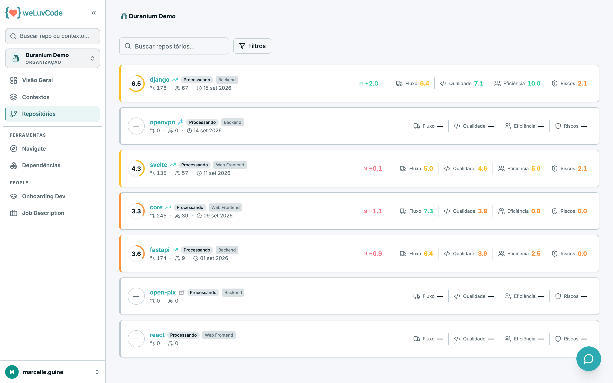
Cada linha traz o Score do repositório, a tendência, o contexto ao qual pertence,
o status, a contagem de pull requests e de contribuidores, a data da última
medição e as quatro dimensões abertas.
Os status
Quando um repositório aparece sem Score, o status explica o motivo:
| Status |
Significado |
| Processando |
a análise está em andamento; o Score aparece ao terminar |
| Aguardando primeira coleta |
o repositório foi conectado, mas a primeira leitura ainda não rodou |
| Sem atividade Git |
não há atividade suficiente no histórico para medir |
| Score baixo |
o Score foi calculado e ficou em patamar que merece atenção |
O monitoramento de cada repositório também pode estar Ativo ou Pausado,
o que é configurado na administração.
Contextos
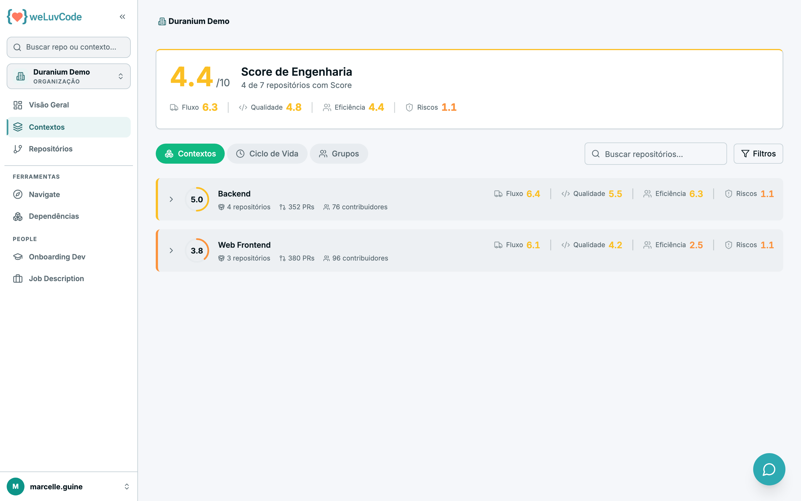
O topo repete o Score do workspace, com o detalhe de quantos repositórios já
têm Score em relação ao total — informação que ajuda a calibrar a confiança no
número.
A lista tem três recortes dos mesmos repositórios:
Contextos
Agrupa pelos contextos definidos na administração — produto, domínio ou squad.
Cada linha mostra o Score do contexto, a quantidade de repositórios, de pull
requests e de contribuidores, além das quatro dimensões. A seta à esquerda
expande a linha e revela os repositórios daquele contexto.
Ciclo de Vida
Agrupa por estágio de maturidade. A classificação é automática, feita a partir
da atividade no git — idade do repositório, frequência de commits, pull requests
integradas e contribuidores ativos. São cinco estágios:
| Estágio |
Critério |
| Ativo em Construção |
criado há menos de 6 meses, ainda sem versão publicada, com commits no último mês e ao menos 3 PRs integradas por mês |
| Ativo em Evolução |
já em produção (com versão publicada ou criado há 6 meses ou mais), commits no último mês, ao menos 3 PRs integradas por mês e 2 ou mais pessoas contribuindo nos últimos 90 dias |
| Ativo em Manutenção |
continua mantido, mas sem o ritmo dos anteriores; inclui repositórios cujo último commit ficou entre 6 e 12 meses e que ainda recebem PRs |
| Legado Estável |
último commit entre 6 e 12 meses atrás e menos de 2 PRs integradas nos últimos 180 dias — em produção, com baixa movimentação |
| Legado Abandonado |
sem commits há mais de 12 meses |
Esse recorte é útil para decidir onde investir: um Score baixo em um repositório
classificado como Legado Abandonado tem peso diferente de um Score baixo em um
Ativo em Evolução. O estágio não altera o cálculo do Score, só a conclusão
que se tira dele — ver Métricas.
Grupos
Agrupa pelos grupos de usuários definidos em
Administração › Grupos de Usuários. Um grupo associa
pessoas a contextos e determina quais repositórios cada pessoa enxerga, então
este recorte mostra o Score do conjunto de repositórios visível a cada grupo.
É a leitura por recorte de time: em vez de "como está este domínio", responde
"como está o que este time acompanha". Grupos sem contextos associados aparecem
vazios.
Análises em andamento
Quando os repositórios estão sendo processados, esta tela acompanha o progresso
de cada um, com percentual e situação. O botão de atualizar recarrega o estado.
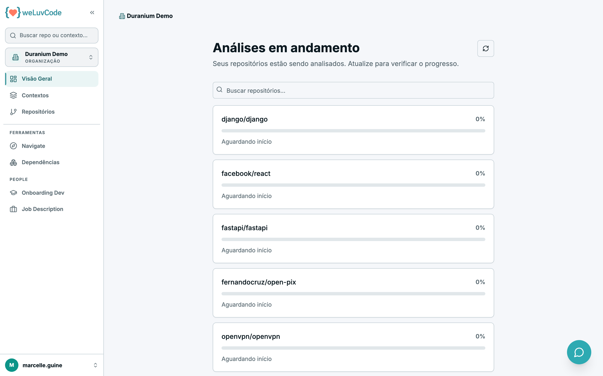
Contexto
Um contexto é um agrupamento lógico de repositórios por produto, domínio ou
squad. Clicar no nome de um contexto muda o escopo do produto inteiro: o caminho
percorrido fica visível na trilha do topo (Workspace › Contexto) e o seletor
da barra lateral passa a indicar o nível em que você está.
Visão Geral do contexto
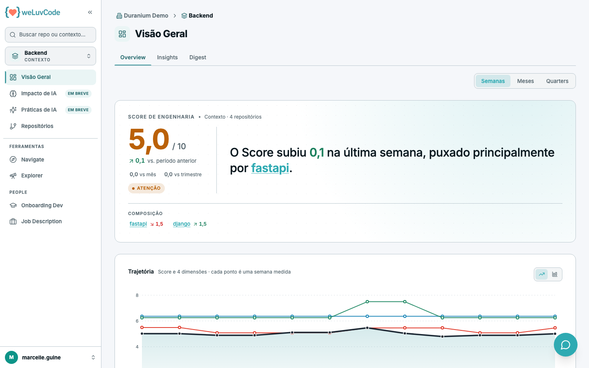
Mesma estrutura da visão do workspace — Score, variação, composição e
trajetória — restrita aos repositórios daquele contexto. A diferença está na
composição, que aqui lista repositórios em vez de contextos: é assim que se
identifica qual repositório puxou o Score do contexto.
A leitura do bloco de Score é a mesma descrita em Workspace, e
a mecânica por trás dos números está em Métricas.
Três abas organizam o conteúdo: Overview, Insights e Digest.
Repositórios do contexto
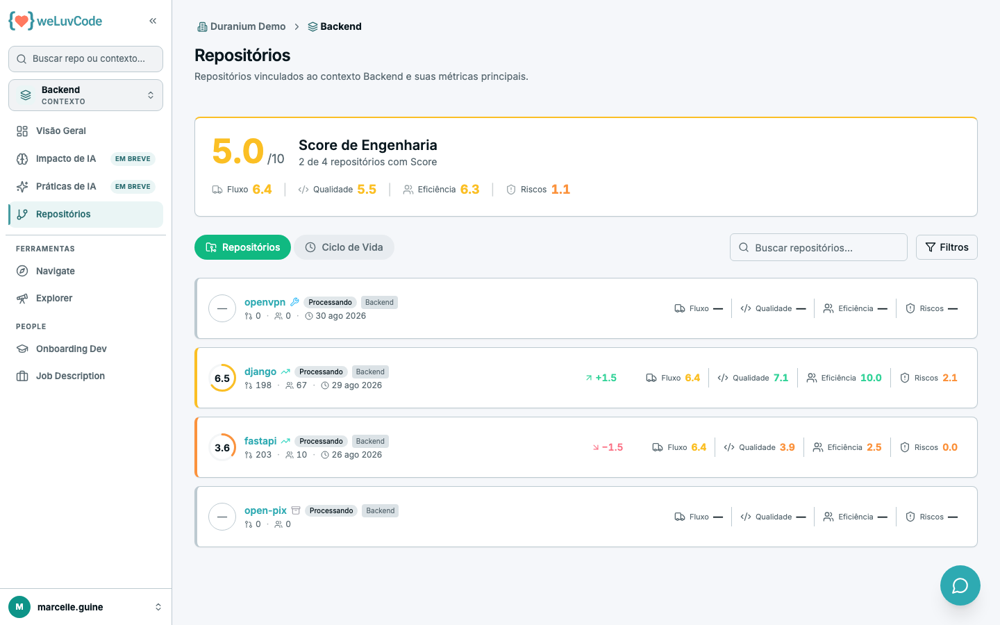
Mesma lista da visão do workspace, limitada ao contexto, com os recortes
Repositórios e Ciclo de Vida.
Navigate no contexto
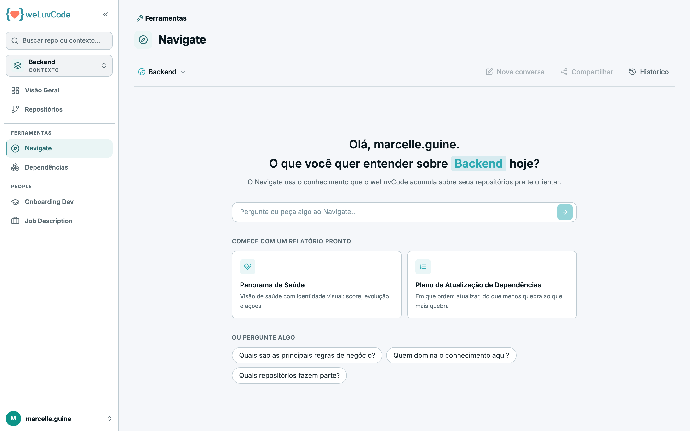
O assistente com o escopo restrito ao contexto: as perguntas são respondidas
considerando apenas os repositórios daquele agrupamento. O funcionamento está
descrito em Ferramentas.
Repositório
O repositório é o nível mais profundo da navegação, e é onde o Score de fato é
calculado — os níveis acima agregam. A trilha do topo mostra o caminho completo
(Workspace › Contexto › Repositório).
A barra lateral, neste nível, traz Visão Geral e Documentação.
Visão Geral do repositório
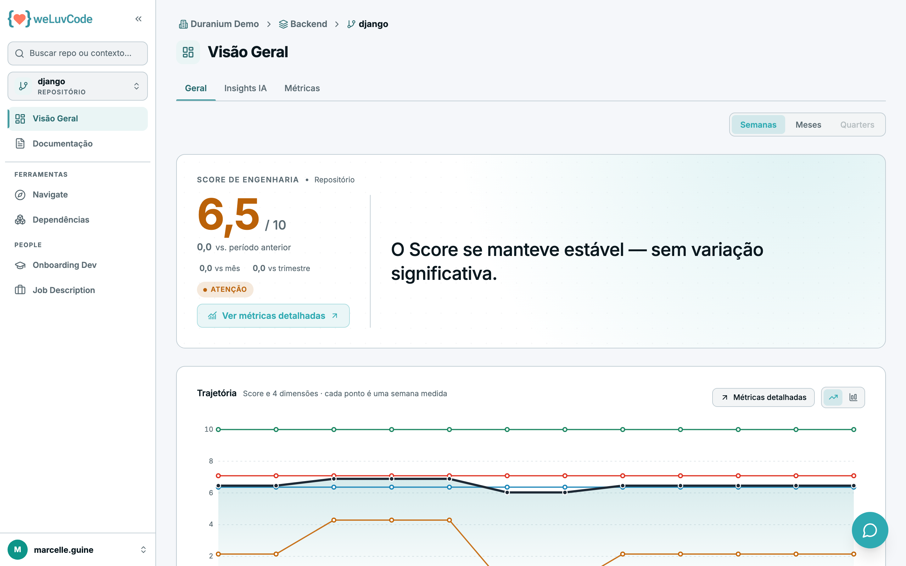
Score do repositório, variação e trajetória. A composição, aqui, lista as quatro
dimensões em vez de repositórios — é o nível em que se vê qual dimensão está
puxando o Score.
O botão Ver métricas detalhadas abre a aba Métricas, onde cada indicador
aparece com o valor medido e a faixa em que caiu. Essa tela está explicada em
Métricas.
Documentação gerada
É onde o WLC entrega a leitura semântica do código. A plataforma analisa o
repositório em sete frentes, cada uma com estado próprio, indicando a branch
analisada.
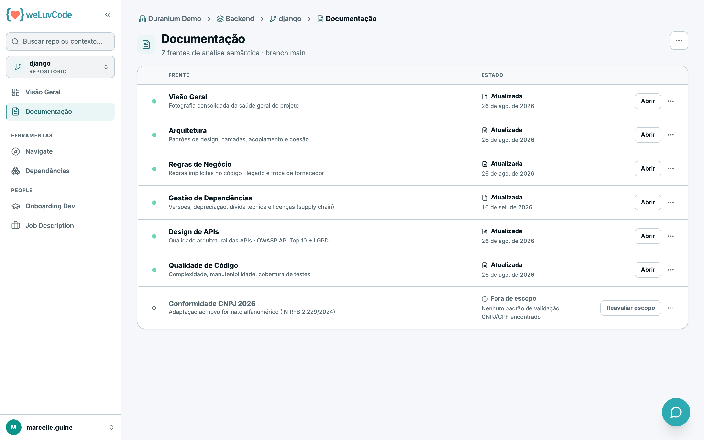
| Frente |
O que cobre |
| Visão Geral |
fotografia consolidada da saúde do projeto |
| Arquitetura |
padrões de design, camadas, acoplamento e coesão |
| Regras de Negócio |
regras implícitas no código |
| Gestão de Dependências |
versões, depreciação, dívida técnica e licenças |
| Design de APIs |
qualidade arquitetural das APIs |
| Qualidade de Código |
complexidade, manutenibilidade e cobertura de testes |
| Conformidade CNPJ 2026 |
adaptação ao novo formato alfanumérico |
Cada frente fica em um de dois estados:
- Atualizada — a análise foi concluída, com a data da última atualização, e o
botão Abrir mostra o documento
- Fora de escopo — a frente não se aplica àquele repositório, e o produto diz
por quê (por exemplo, nenhum endpoint de API detectado). O botão Reavaliar
escopo força uma nova verificação
Esse segundo estado é deliberado: em vez de entregar um documento vazio, o
produto explica a ausência.
O que define "fora de escopo"
A decisão é automática e acontece antes da análise rodar. O motor inspeciona
o repositório e produz artefatos de detecção — inventário de arquivos,
tecnologias, dependências declaradas, registro de APIs — e cada frente tem um
critério objetivo sobre esses artefatos.
Vale registrar como a decisão não é tomada: ela não depende de julgamento do
modelo de IA. Os critérios usam apenas sinais calculados a partir do código, o
que evita que uma leitura equivocada do modelo tire uma análise de escopo.
Primeiro há uma regra geral. Repositório pequeno — menos de 100 linhas de
código e menos de 5 arquivos — coloca todas as frentes fora de escopo, exceto a
Visão Geral. As duas condições precisam ser verdadeiras ao mesmo tempo.
Depois, cada frente tem seu próprio critério:
| Frente |
Entra em escopo quando |
Mensagem quando não entra |
| Visão Geral |
sempre; é a única frente que a regra de repositório pequeno não afeta |
— |
| Arquitetura |
o repositório tem mais de 5 arquivos e contém arquivos de código-fonte |
"Repositório não possui estrutura suficiente para análise de arquitetura" |
| Regras de Negócio |
o repositório tem mais de 100 linhas e contém arquivos de código-fonte |
"Repositório possui código insuficiente para análise de negócios" |
| Qualidade de Código |
há pelo menos alguma linha de código e arquivos de código-fonte |
"Nenhum arquivo de código-fonte encontrado" |
| Gestão de Dependências |
há dependências declaradas em algum gerenciador de pacotes |
"Nenhuma dependência detectada" |
| Design de APIs |
há endpoints detectados, ou arquivos de especificação de API (OpenAPI, WSDL, GraphQL, gRPC) |
"Nenhum endpoint de API detectado" |
| Conformidade CNPJ 2026 |
o repositório declara alguma biblioteca conhecida de validação de CPF/CNPJ |
"Nenhum padrão de validação CNPJ/CPF encontrado" |
Dois detalhes que evitam falso negativo:
- "Arquivo de código-fonte" exclui markdown, formatos de configuração e
arquivos de dados. Um repositório só com YAML e README não passa nos
critérios que exigem código, e é por isso que a mensagem de Qualidade de Código
menciona repositórios que contêm apenas configurações ou scripts simples.
- Design de APIs não exige endpoints implementados. Um repositório que só
publica contratos — arquivos
.wsdl, .proto ou especificações OpenAPI — entra
em escopo mesmo sem código de API.
Quando os artefatos de detecção não estão disponíveis, o motor assume que a
análise se aplica em vez de descartá-la. O comportamento é conservador na
direção de analisar demais, não de menos.
É por isso que Reavaliar escopo existe: o critério é avaliado sobre o estado
do repositório naquele momento. Um repositório que ganhou seu primeiro endpoint,
ou passou a declarar dependências, muda de situação — e a reavaliação é o que
detecta isso.
Como a documentação é atualizada
As análises não são geradas uma única vez: elas acompanham a evolução do código.
Há dois caminhos.
Automaticamente, pela esteira de CI/CD. Quando o repositório tem a integração
configurada, cada execução do pipeline dispara uma nova análise, e a documentação
reflete o estado atual do código sem intervenção. A conexão é feita com uma chave
de API, criada em Administração › API Keys — é para isso
que aquelas chaves existem.
Manualmente, por esta tela. O menu de ações de cada frente, no fim da linha,
oferece Gerar novamente, que reprocessa apenas aquela análise. Para
reprocessar tudo de uma vez, o menu no topo direito da tela traz Gerar todas
novamente, que pede confirmação antes de disparar — a análise de todas as
frentes leva alguns minutos e consome recursos do motor.
Os mesmos menus permitem exportar o resultado: Baixar PDF e Baixar
Markdown por frente, ou Baixar tudo em PDF e Baixar tudo em Markdown
para o conjunto.
Frentes marcadas como Fora de escopo não têm a opção de gerar novamente, e sim
Reavaliar escopo: em vez de reprocessar uma análise que não se aplica, o
produto verifica de novo se ela passou a se aplicar — por exemplo, se o
repositório ganhou endpoints de API desde a última verificação.
Esta frente está em evolução. A análise semântica que produz esses
documentos está passando por uma reformulação ampla, que abrange desde a coleta
dos dados até o processamento e a forma de apresentá-los. Por isso, neste
momento, algumas análises aparecem com layout e nível de detalhe diferentes das
demais. A diferença é temporária e será uniformizada conforme as frentes forem
migradas para o novo formato.
Ferramentas
Navigate
Assistente que responde perguntas usando o conhecimento que o WLC acumulou sobre
os repositórios — tanto a documentação gerada pelas análises semânticas quanto as
métricas de processo.
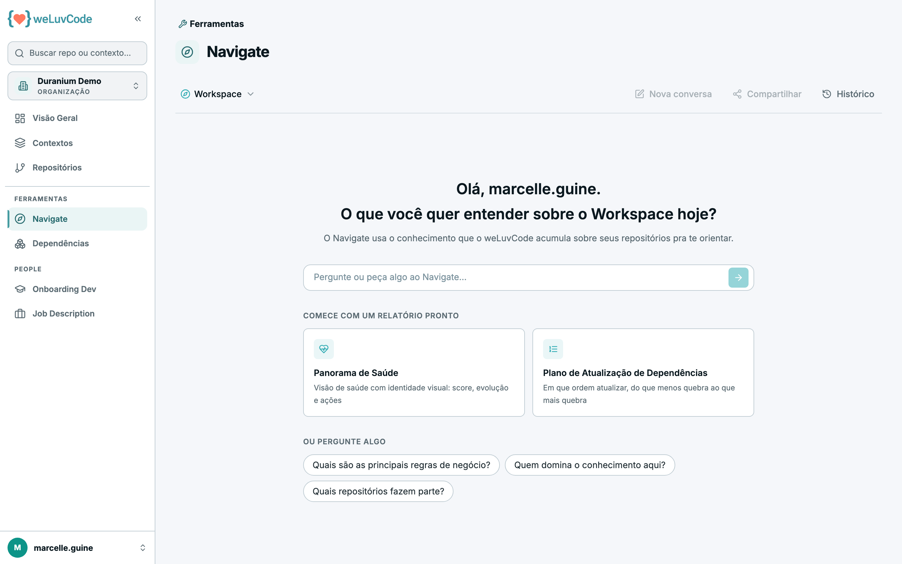
Onde acessar
Há dois caminhos, e eles compartilham o mesmo histórico de conversas:
- Pelo menu lateral, em Ferramentas › Navigate, que abre a tela cheia
- Pelo botão flutuante, o ícone de conversa no canto inferior direito, que
está presente em todas as telas do produto e abre um painel lateral sem
tirar você de onde está
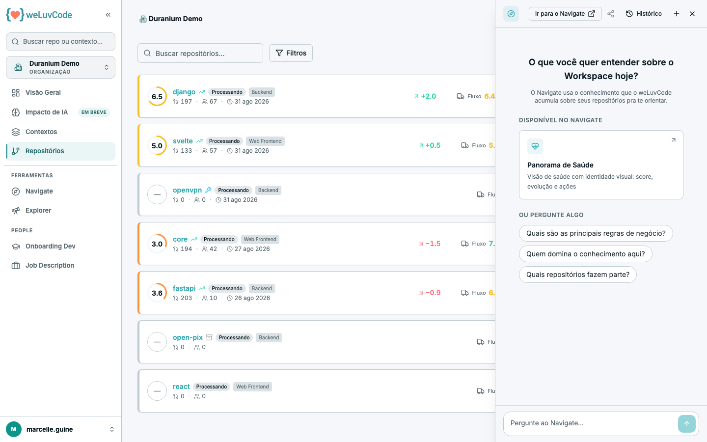
O painel é a versão compacta: serve para uma pergunta rápida sobre a tela que
você está vendo. Ele traz Ir para o Navigate, que transfere a conversa para a
tela cheia quando o assunto se aprofunda.
Escopo da conversa
O seletor no canto superior esquerdo define sobre o que o Navigate responde:
- Workspace — o workspace inteiro, com todos os seus repositórios
- Um contexto específico — apenas os repositórios daquele agrupamento
Ao abrir o painel flutuante, o escopo vem da tela em que você está. O escopo não
pode ser trocado no meio de uma resposta: é preciso esperar a resposta corrente
terminar.
O que cada pessoa enxerga depende das permissões. Com a filtragem por usuário
ativa, perfis de desenvolvedor e visualizador só recebem respostas sobre os
repositórios aos quais têm acesso pelos seus
grupos.
Os três botões
Nova conversa — descarta o contexto acumulado e começa do zero. Útil quando o
assunto muda: sem isso, o Navigate segue considerando as perguntas anteriores.
Compartilhar — gera um link para a conversa. O acesso é restrito: apenas
pessoas do mesmo workspace e com permissão sobre os repositórios tratados
na conversa conseguem abrir. Links de outro workspace são recusados, e quem
não tem acesso aos repositórios recebe orientação para pedir liberação ao
administrador. Quem abre um link compartilhado vê a conversa marcada como
Compartilhada por quem a gerou.
Histórico — lista as conversas anteriores, com a data relativa de cada uma
("Há 3 dias") e o escopo em que foi feita, para retomar de onde parou.
Panorama de Saúde
É o único relatório pronto disponível hoje, oferecido em Comece com um
relatório pronto. Ele monta uma visão consolidada de saúde da engenharia —
score, evolução no período e ações sugeridas — com formatação própria, em vez de
uma resposta em texto corrido.
O Panorama é sempre construído sobre contextos. Ao acioná-lo, o produto
pergunta duas coisas:
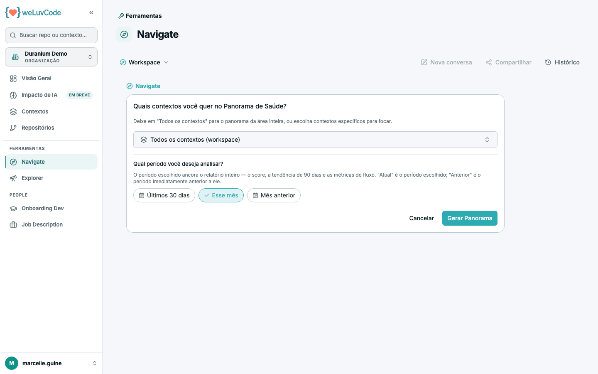
- Quais contextos entram — um, vários, ou "Todos os contextos (workspace)".
Quando muitos contextos são selecionados, todos entram no score consolidado,
mas a tabela detalha os principais e agrupa o restante em "Demais".
- Qual o período base — Últimos 30 dias, Esse mês ou Mês anterior.
O período escolhido ancora o relatório inteiro: o score, a tendência de 90 dias e
as métricas de fluxo. Nas comparações, "Atual" é o período escolhido e "Anterior"
é o período imediatamente anterior a ele.
No painel flutuante o Panorama aparece como Disponível no Navigate: clicar
leva à tela cheia, onde a seleção de contextos e período acontece.
O que perguntar
O produto oferece três atalhos abaixo do campo de pergunta:
- Quais são as principais regras de negócio?
- Quem domina o conhecimento aqui?
- Quais repositórios fazem parte?
São pontos de partida, não um cardápio fechado. Como o Navigate se apoia na
documentação gerada pelas análises e nas métricas de processo, as perguntas que
mais rendem são as que aproveitam esse cruzamento:
Para entrar em um código desconhecido
- O que este repositório faz e como está organizado?
- Quais são as regras de negócio implícitas neste módulo?
- Que decisões de arquitetura explicam a estrutura atual?
- Por onde começar para mexer nesta parte do sistema com segurança?
Para entender um número do painel
- Por que a Qualidade da Engenharia caiu no último período?
- O que está puxando o Bus Factor para baixo neste repositório?
- Quais repositórios têm o maior risco de continuidade hoje?
- O que mudou nas últimas semanas que explica a variação do Score?
Para decidir onde agir
- Quais repositórios deveriam receber atenção nesta semana?
- Onde a revisão de código está concentrada em poucas pessoas?
- Que dependências estão desatualizadas ou representam risco?
- Quais repositórios estão em estágio de legado mas ainda são críticos?
Para preparar uma conversa ou um documento
- Resuma a saúde desta área para uma reunião de gestão.
- Quem procurar sobre este módulo?
- Que pontos de conformidade merecem atenção neste repositório?
People
Duas funcionalidades que aplicam o conhecimento do WLC sobre a base de código a
decisões sobre pessoas. As duas seguem o mesmo desenho: uma lista do que já foi
produzido, e um assistente de três passos para produzir um item novo.
Onboarding Dev
Planos de integração para desenvolvedores que chegam ao time, construídos a
partir do que a plataforma já sabe sobre os repositórios.
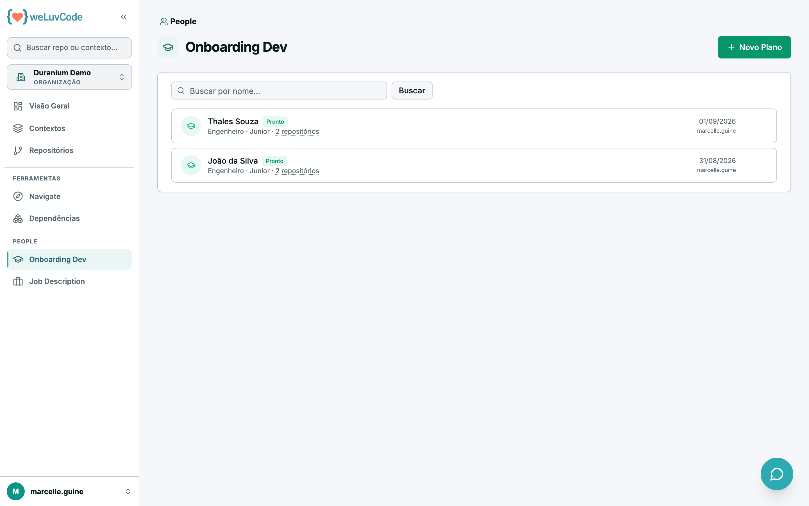
Cada plano aparece com o nome da pessoa, o cargo e a senioridade, os repositórios
vinculados, quem criou e a data. O selo à direita do nome indica o estado — no
exemplo, Pronto. A busca filtra por nome e Novo Plano inicia a criação.
O número de repositórios é um link: é por ele que se vê sobre qual parte da base
de código aquele plano foi construído.
Criar um plano
Novo Plano abre um assistente de três passos.
Passo 1 — Desenvolvedor. Os dados de quem está chegando:
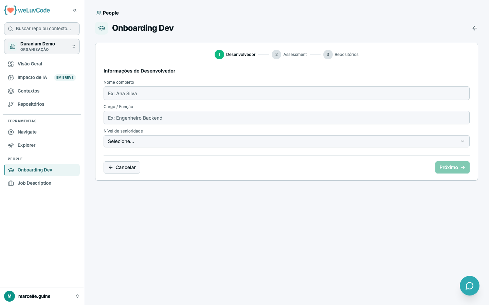
- Nome completo
- Cargo / Função
- Nível de senioridade — Junior (0–2 anos), Pleno (3–5 anos) ou Senior (5+ anos)
Passo 2 — Assessment. O perfil técnico, que orienta a profundidade do plano:
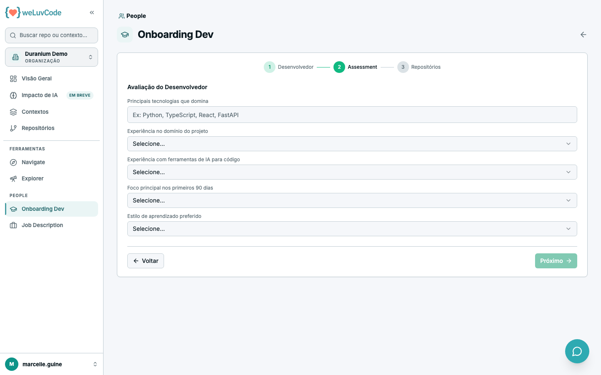
- Principais tecnologias que domina — campo livre
- Experiência no domínio do projeto — Nenhuma, Baixa, Média ou Alta
- Experiência com ferramentas de IA para código — Nenhuma, Básica (Copilot),
Intermediária ou Avançada (Claude Code, Cursor)
- Foco principal nos primeiros 90 dias — Desenvolvimento de funcionalidades,
Correção de bugs e estabilidade, Testes e qualidade, ou Infraestrutura e
operações
- Estilo de aprendizado preferido — Programação em par, Documentação e
leitura, Prático (mergulhar no código) ou Misto
Passo 3 — Repositórios. A seleção dos repositórios em que a pessoa vai
trabalhar nos primeiros 90 dias, com filtro por nome. São eles que definem qual
conhecimento acumulado entra no plano.
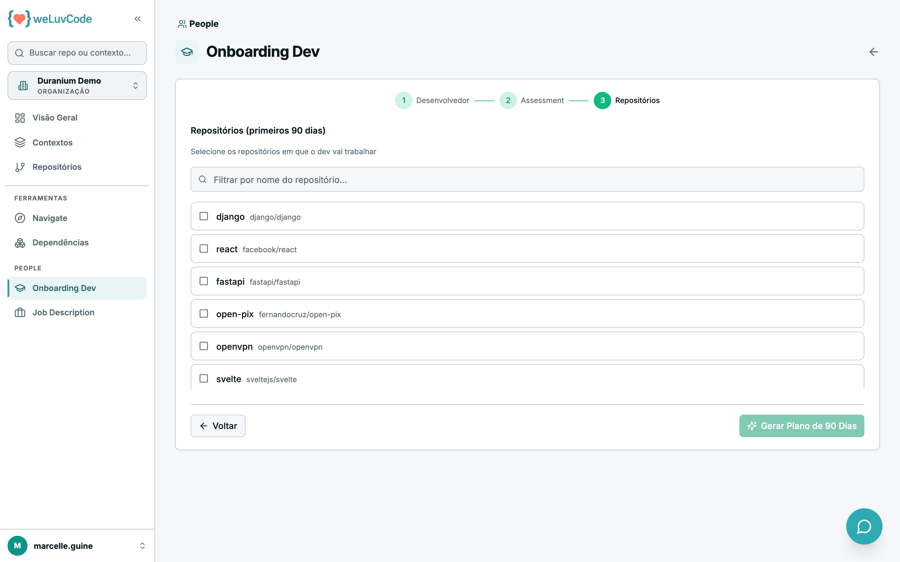
O botão final é Gerar Plano de 90 Dias. A geração leva algum tempo: o plano
aparece na lista com o estado Gerando e passa a Pronto quando conclui.
Job Description
Descrições de vaga geradas com base nas tecnologias e características reais dos
repositórios do workspace.
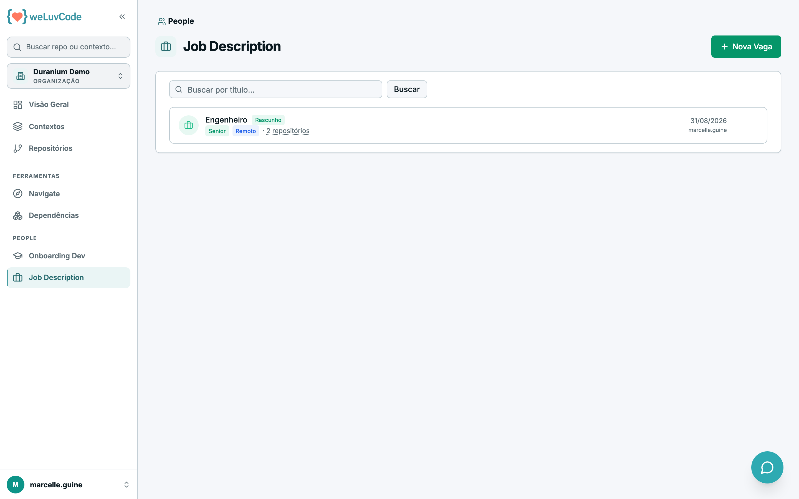
Cada vaga traz o título, o estado (Rascunho ou publicada), a senioridade, o
regime de trabalho, os repositórios usados como base, o autor e a data. Uma vaga
em rascunho pode ser retomada e editada antes de ser finalizada.
Criar uma vaga
Nova Vaga abre um assistente de três passos, no mesmo formato do Onboarding.
Passo 1 — Vaga. As informações da posição:
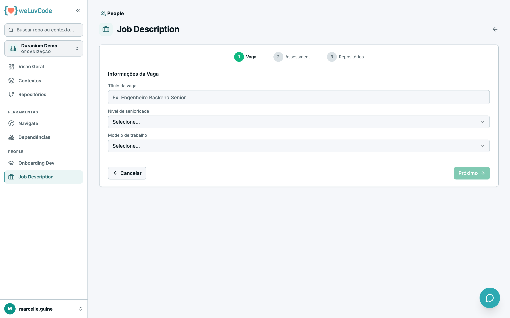
- Título da vaga
- Nível de senioridade
- Modelo de trabalho — presencial, híbrido ou remoto
Passo 2 — Assessment. O perfil desejado para a pessoa a contratar.
Passo 3 — Repositórios. Os repositórios que servem de base: é deles que saem
as tecnologias, as práticas e o contexto técnico que aparecem no texto final.
A vaga gerada
Abrir uma vaga mostra a Descrição da Vaga pronta para uso, com botões de
exportação em PDF e DOCX.

O documento começa por uma linha de resumo — senioridade, modelo de trabalho,
área e tamanho do time — seguida da apresentação da posição em prosa e das
seções de Responsabilidades e Requisitos.
O conteúdo não é genérico: as responsabilidades e os requisitos citam as
tecnologias efetivamente usadas nos repositórios selecionados e as práticas que a
análise identificou neles, como testes automatizados, revisão de código e
pipeline de CI/CD.
Perfil e conta
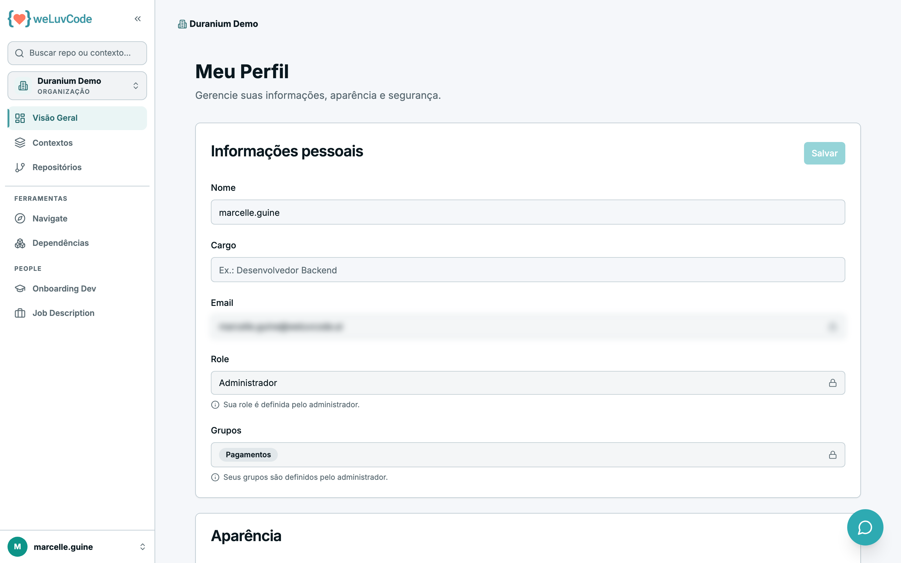
Em Meu Perfil você edita seus dados e a aparência do produto.
Campos editáveis:
Campos apenas de leitura, sinalizados com um cadeado:
- Email
- Role — o perfil de acesso, definido pelo administrador
- Grupos — também definidos pelo administrador; são eles que determinam quais
repositórios você enxerga (ver Administração)
O produto explica cada bloqueio na própria tela, para deixar claro que a mudança
existe, mas passa pela administração.
Abaixo fica a seção Aparência, com as preferências visuais.
No print, o e-mail está borrado por ser dado pessoal.
Painel Admin
A área administrativa tem barra lateral própria, identificada por ADMIN, e o
link Voltar ao sistema no rodapé retorna à navegação normal.
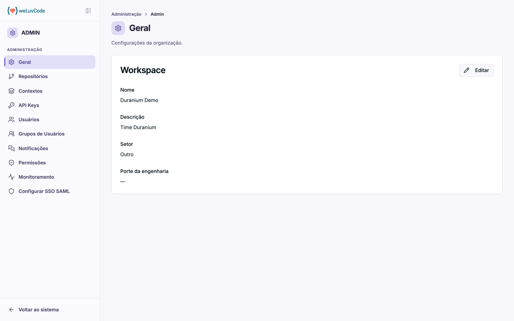
É onde se configura tudo que o painel principal consome: quais repositórios são
analisados, como eles são agrupados, quem tem acesso a quê, e com que frequência
os dados são coletados.
O que fica onde
O acesso a cada seção depende de permissão: quem não tem a permissão
correspondente não vê o item no menu e é redirecionado ao tentar acessá-lo
diretamente.
Por onde começar
Num workspace novo, a ordem que funciona é esta:
- Repositórios — conectar o GitHub e escolher o que será analisado
- Contextos — agrupar os repositórios por domínio e escrever o briefing de
cada um
- Usuários — convidar as pessoas e definir o perfil de cada uma
- Grupos — se nem todo mundo deve ver tudo, restringir por contexto
- API Keys — se as análises devem rodar a cada push, conectar a esteira
- Monitoramento — ajustar a frequência da coleta, se o padrão não servir
Geral
Os dados cadastrais do workspace — o que o produto usa para se referir a ele e
para calibrar comparações.
Os campos
| Campo |
Para que serve |
| Nome |
identifica o workspace no cabeçalho e na barra lateral |
| Descrição |
texto livre sobre o que o workspace faz |
| Setor |
segmento de atuação |
| Porte da engenharia |
tamanho do time técnico |
Setor e porte não são decorativos: eles dão à plataforma uma referência do tipo
de operação, o que ajuda a contextualizar análises e relatórios gerados por IA.
Como editar
O botão Editar, no canto do cartão, libera os campos para alteração. O nome
alterado passa a valer imediatamente em toda a interface.
Repositórios
Onde os repositórios são conectados ao WLC. Nada é analisado antes de passar por
aqui.
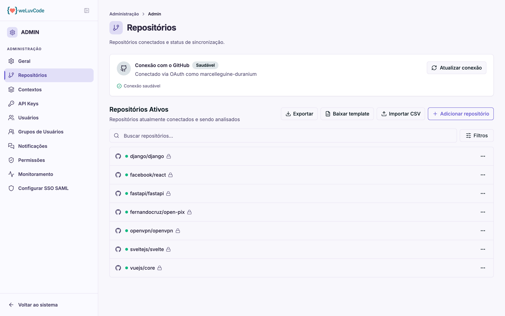
O bloco superior mostra o estado da integração: o método (OAuth), a conta usada e
um indicador de saúde. Atualizar conexão refaz a autorização — necessário
quando as permissões concedidas mudam ou expiram.
Se a conexão estiver sem alguma permissão obrigatória, o produto avisa nesse
bloco e explica quais faltam. Sem elas, as análises não rodam.
Adicionar repositórios
Adicionar repositório abre a lista de repositórios disponíveis na conta
conectada, com busca por nome. A tela informa a cota do plano — quantos
repositórios já estão em uso e quantas vagas restam — e marca os arquivados, para
que não sejam incluídos por engano.
Repositórios já adicionados ficam ocultos por padrão; a caixa Mostrar
repositórios já adicionados os exibe.
Para incluir muitos de uma vez existe o caminho por planilha:
- Baixar template — gera o CSV no formato esperado
- Preencher com os repositórios desejados
- Importar CSV — envia a lista
Exportar faz o inverso: extrai a lista atual, útil para auditoria ou para
replicar a configuração em outro workspace.
Monitoramento por repositório
Cada repositório da lista tem um menu de ações e um estado de monitoramento, que
pode ser Ativo ou Pausado. Pausar interrompe novas análises sem remover o
repositório nem descartar o histórico já coletado — útil para um projeto que
entrou em espera.
Contextos
Um contexto é um agrupamento lógico de repositórios — por produto, domínio ou
squad. É a peça central da estruturação dos dados: o Score é agregado por
contexto, o Navigate pode ser restrito a um contexto, e o acesso das pessoas é
concedido por contexto.
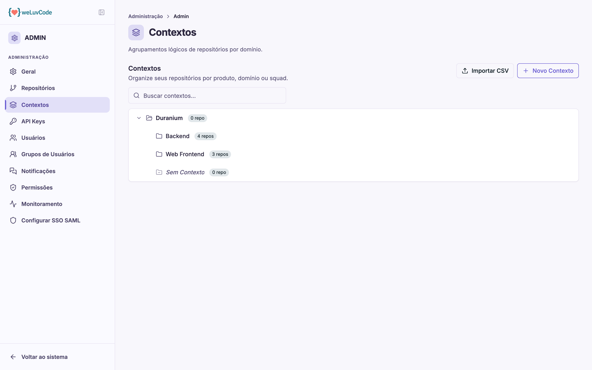
A árvore
Os contextos aparecem em árvore, com a contagem de repositórios de cada um.
Contextos podem ter contexto pai, o que permite hierarquias — uma área que se
subdivide em domínios, por exemplo.
Um nó Sem Contexto reúne os repositórios ainda não classificados. É o item a
observar depois de conectar repositórios novos: enquanto estiverem ali, não
entram em nenhuma visão por contexto.
Criar um contexto
Novo Contexto abre um formulário curto:
| Campo |
Observação |
| Nome |
obrigatório |
| Descrição |
opcional, até 250 caracteres |
| Contexto pai |
define a posição na árvore |
Importar CSV permite criar vários de uma vez.
O briefing do contexto
Abrir um contexto leva à sua tela de detalhe, que tem duas partes: o briefing
e a lista de repositórios.
O briefing é um texto livre de até 3000 caracteres com informações de negócio
sobre aquele conjunto de repositórios. Ele não é decorativo: é usado pela IA
para contextualizar as análises daquele contexto. O mesmo código analisado com
e sem briefing produz leituras diferentes, porque o modelo passa a saber o que o
sistema faz, que restrições existem e o que está em andamento.
O botão Usar template preenche o campo com uma estrutura de quatro partes:
| Seção do template |
O que escrever |
| Sobre este produto/domínio |
o que este conjunto de repositórios faz e qual o papel dele no negócio |
| Stack e decisões técnicas |
linguagens, frameworks, bancos, padrões arquiteturais adotados e por quê |
| Dependências e integrações |
outros times, serviços externos ou internos dos quais o domínio depende |
| Contexto relevante para análise |
migrações em andamento, dívida técnica conhecida, restrições regulatórias, decisões recentes |
A última seção costuma ser a mais valiosa: é onde entram informações que não
estão no código e que mudam a interpretação dele — uma migração em curso explica
código duplicado, uma restrição regulatória explica uma validação aparentemente
redundante.
Repositórios do contexto
Abaixo do briefing fica a lista de repositórios vinculados, cada um com seu
estado de monitoramento. Adicionar vincula repositórios ao contexto e
Remover desfaz o vínculo — sem excluir o repositório do workspace, que
apenas volta para "Sem Contexto".
O contexto também pode ser editado ou excluído pelos botões no topo.
API Keys
Chaves de acesso à API do WLC. Elas existem para um propósito específico:
disparar análises a partir da esteira de CI/CD, para que a documentação
gerada acompanhe o código sem intervenção manual.
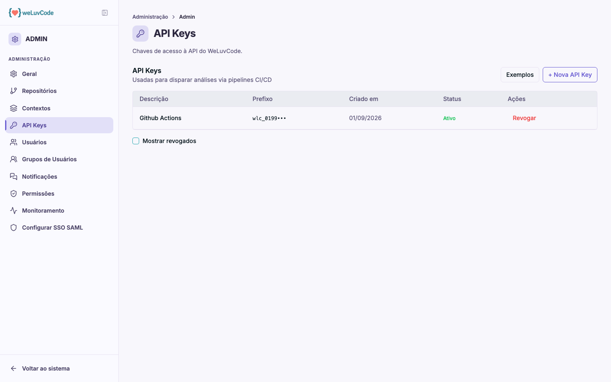
A tabela
| Coluna |
Conteúdo |
| Descrição |
o nome dado à chave na criação, que identifica seu uso |
| Prefixo |
os primeiros caracteres da chave, para reconhecê-la sem expô-la |
| Criado em |
data de emissão |
| Status |
Ativo ou Revogado |
| Ações |
Revogar, que invalida a chave imediatamente |
A caixa Mostrar revogados inclui as chaves desativadas na listagem.
Criar uma chave
Nova API Key gera a chave. O valor completo é exibido uma única vez, no
momento da criação — depois disso, a listagem mostra apenas o prefixo. Guarde-o
no cofre de segredos da sua esteira nesse momento; se perder, o caminho é revogar
e gerar outra.
Chaves de API são credenciais. Não as compartilhe em conversas, tickets ou
documentos, e prefira revogar e emitir uma nova a reaproveitar uma chave que
tenha sido exposta.
Exemplos de integração
O botão Exemplos abre um guia com configurações prontas para reanálise
automática a cada push na branch principal, cobrindo GitHub Actions, GitLab CI,
Azure DevOps, CircleCI, Bitbucket, Jenkins e cURL, com botão para copiar.
O funcionamento é o mesmo em todas as plataformas:
- A chave é guardada como secret na sua ferramenta de CI
- O pipeline chama o endpoint de análise enviando a chave no cabeçalho
Authorization: Bearer
- A API responde 202 Accepted e a análise roda em segundo plano, sem travar
o pipeline
Como a resposta é assíncrona, o build não espera pela análise: o resultado
aparece na documentação do repositório quando o processamento termina.
Usuários
As pessoas com acesso ao workspace.
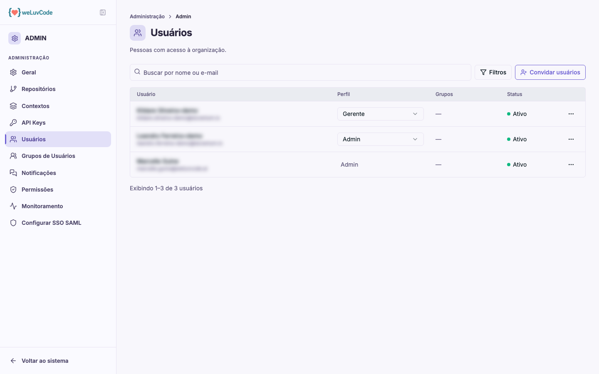
A tabela
| Coluna |
Conteúdo |
| Usuário |
nome e e-mail |
| Perfil |
o papel da pessoa, editável no próprio seletor da linha |
| Grupos |
os grupos a que pertence, que determinam o que ela enxerga |
| Status |
Ativo, Inativo, Pendente ou Expirado |
A busca filtra por nome ou e-mail, e Filtros permite recortar por status e
por situação do convite.
Os perfis
O produto trabalha com cinco perfis: Administrador, Gestor, Analista de
Segurança, Desenvolvedor e Visualizador. O que cada um pode fazer está
em Permissões.
Trocar o perfil de alguém é imediato: basta usar o seletor na linha da pessoa.
Convidar pessoas
Convidar usuários envia convite por e-mail. Até a pessoa aceitar, ela aparece
na lista com status Pendente; convites não aceitos dentro do prazo passam a
Expirado, e o filtro de convites ajuda a encontrá-los para reenvio.
Perfil e visibilidade são coisas diferentes
Vale separar os dois conceitos, porque eles se confundem com frequência:
- O perfil define o que a pessoa pode fazer — administrar, apenas
visualizar, e assim por diante
- Os grupos definem o que a pessoa enxerga — quais contextos, e portanto
quais repositórios
Uma pessoa com perfil de Desenvolvedor e sem grupo algum pode não ver nenhum
repositório. Administradores são exceção: enxergam tudo, independentemente de
grupos.
No print, nomes e e-mails estão borrados por serem dados pessoais.
Grupos de Usuários
Grupos são o mecanismo de visibilidade do produto: eles respondem quem
enxerga o quê.
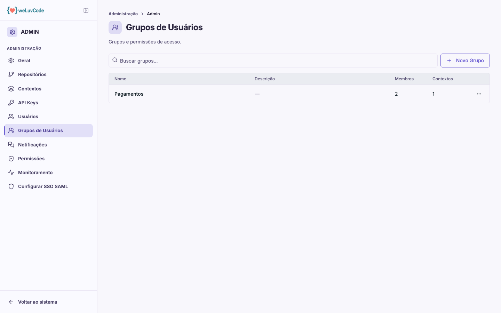
O que um grupo reúne
Um grupo junta duas coisas:
- pessoas — os membros do grupo
- contextos — os contextos cujos repositórios esses membros poderão ver
As pessoas de um grupo passam a enxergar os repositórios dos contextos vinculados
a ele, e não os demais. As colunas da lista refletem isso: nome, descrição,
número de membros e número de contextos.
Administradores são exceção. Quem tem perfil de administrador visualiza
todos os repositórios do workspace, esteja ou não em algum grupo. Grupos
restringem a visão dos demais perfis.
Criar um grupo
Novo Grupo abre um assistente de três passos:
Passo 1 — Identificação. Nome do grupo e descrição.
Passo 2 — Membros (opcional). Lista das pessoas do workspace, com busca,
para marcar quem entra.
Passo 3 — Contextos (opcional). Lista dos contextos existentes, para marcar
quais o grupo poderá ver.
Os dois últimos passos são opcionais: dá para criar o grupo e preencher depois,
pelo menu de ações na linha. Mas um grupo sem contextos não concede visibilidade
alguma, e um grupo sem membros não afeta ninguém.
Efeito no Navigate
A visibilidade por grupo também vale para o assistente: com a filtragem por
usuário ativa, perfis de desenvolvedor e visualizador recebem respostas apenas
sobre os repositórios a que têm acesso. O Navigate não contorna a restrição de
visibilidade.
Notificações
Envio de mensagens em comunicadores, organizado por contexto. É a única parte do
produto que envia informação para fora dele.
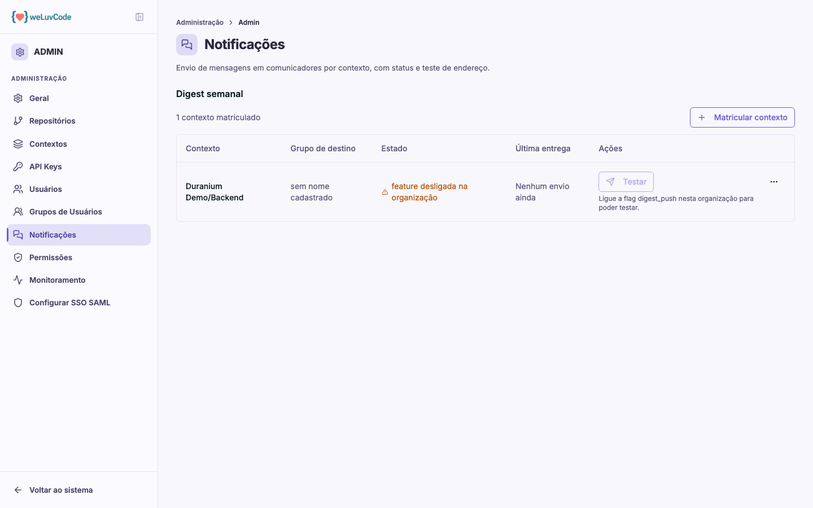
Digest semanal
O recurso disponível é o Digest semanal: um resumo periódico do contexto,
entregue no comunicador do time.
Cada contexto precisa ser matriculado individualmente, através de Matricular
contexto, informando o grupo de destino. A tabela acompanha cada matrícula:
| Coluna |
Conteúdo |
| Contexto |
o contexto matriculado |
| Grupo de destino |
para onde as mensagens vão |
| Estado |
se o envio está apto a acontecer |
| Última entrega |
quando o último digest saiu |
| Ações |
Testar, que dispara um envio de verificação |
O estado é a coluna a observar
Matricular o contexto não basta. O envio depende de a feature flag digest_push
estar ligada para o workspace. Enquanto ela estiver desligada, a linha exibe
feature desligada na organização, o botão Testar fica indisponível, e a
instrução aparece na própria linha.
Um grupo de destino sem endereço cadastrado também é sinalizado ali, na mesma
coluna — o que evita descobrir o problema só quando o digest não chega.
Permissões
Define, por perfil de usuário, quais funcionalidades ficam habilitadas.
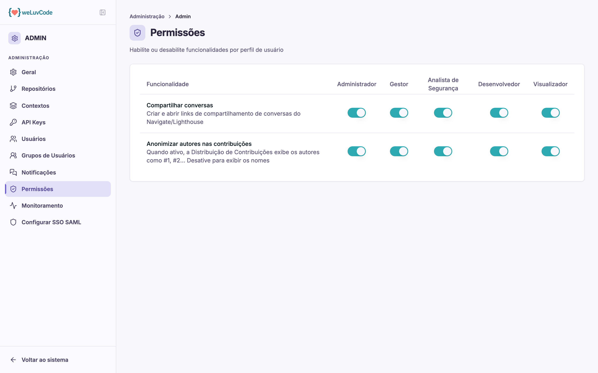
A matriz
As linhas são funcionalidades e as colunas são os cinco perfis do produto:
Administrador, Gestor, Analista de Segurança, Desenvolvedor e
Visualizador. Cada cruzamento tem um interruptor.
As funcionalidades configuráveis
| Funcionalidade |
Efeito quando ativa |
| Compartilhar conversas |
o perfil pode criar e abrir links de compartilhamento de conversas do Navigate |
| Anonimizar autores nas contribuições |
a Distribuição de Contribuições exibe os autores como #1, #2, #3…; desativar mostra os nomes |
Sobre a anonimização
A segunda merece decisão consciente: ela controla se nomes de pessoas aparecem
associados a métricas de contribuição.
Manter a anonimização ativa é a opção mais conservadora do ponto de vista de
dados pessoais, e é coerente com o desenho do produto — que, como descrito em
Métricas, não produz score individual por desenvolvedor. As
métricas de distribuição existem para revelar concentração de conhecimento,
não para avaliar pessoas.
Desativar a anonimização transforma um indicador de risco organizacional em algo
que pode ser lido como avaliação individual. É uma escolha do workspace, e vale
que seja explícita.
Monitoramento
Saúde do motor de análise e das integrações, e o controle de com que frequência
os dados são coletados.
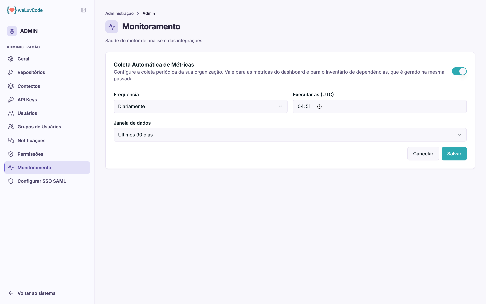
Coleta Automática de Métricas
O bloco principal controla a periodicidade da coleta que alimenta o Score e as
métricas do painel. O interruptor no canto liga e desliga a coleta automática.
| Campo |
O que define |
| Frequência |
de quanto em quanto tempo a coleta roda — diariamente, por exemplo |
| Executar às (UTC) |
o horário da execução, em UTC |
| Janela de dados |
o período considerado em cada coleta, por exemplo os últimos 90 dias |
Dois pontos que evitam confusão:
O horário é em UTC, não no fuso local. Uma coleta às 04:51 UTC acontece por
volta das 01:51 no horário de Brasília.
A janela de dados não é a mesma coisa que a frequência. A frequência diz de
quanto em quanto tempo a coleta roda; a janela diz quanto tempo para trás cada
coleta enxerga. Uma coleta diária com janela de 90 dias recalcula, todo dia, uma
fotografia dos últimos 90 dias.
Desligar a coleta automática não apaga o histórico já reunido — apenas interrompe
a atualização, e o painel passa a mostrar dados cada vez mais antigos.
Configurar SSO SAML
Autenticação corporativa via SAML, para que as pessoas entrem no WLC com as
credenciais que já usam na empresa.
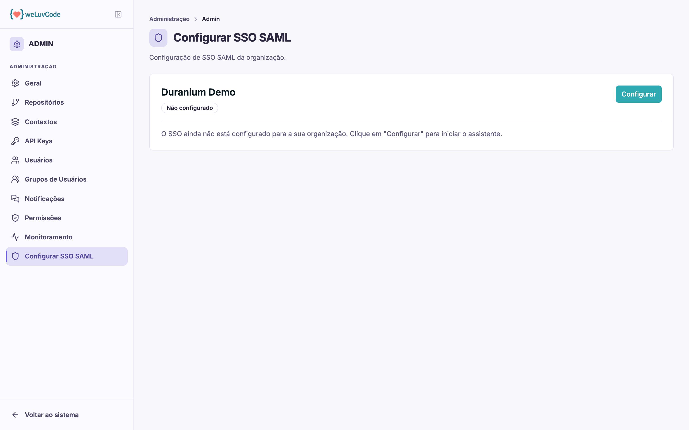
O estado da configuração
A tela mostra a situação do SSO do workspace, que pode ser:
| Estado |
Significado |
| Não configurado |
nenhum provedor de identidade foi conectado |
| Pendente |
a configuração foi iniciada e ainda não concluída |
| Ativo |
o login por SSO está funcionando |
| Desabilitado |
a configuração existe, mas está desligada |
| Falhou |
a validação com o provedor não passou |
O botão Configurar abre o assistente de configuração, onde se informam os
dados do provedor de identidade.
Efeito no login
Com o SSO ativo, a tela de acesso passa a oferecer Entrar com SSO, ao lado do
login por e-mail e senha — como descrito em Acesso.
Super Admin
Seções restritas à equipe Duranium, que administram a plataforma como um todo em
vez de um workspace específico. A própria tela avisa dessa restrição.
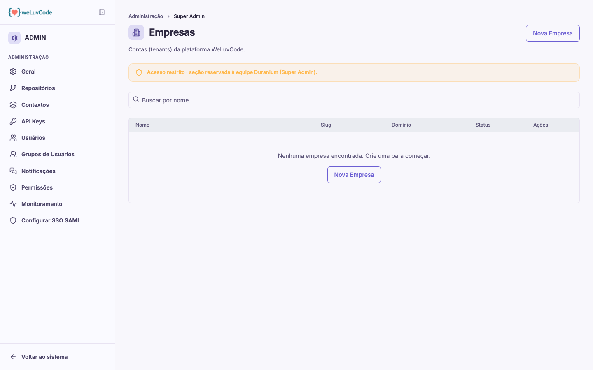
Empresas
Lista as contas (tenants) da plataforma, com nome, slug, domínio e status, e
permite criar uma nova empresa. É a partir daqui que se chega às configurações
de cada workspace de cliente, incluindo SSO e feature flags específicas.
Feature flags e Termos de uso
Duas outras seções pertencem a este grupo:
- Feature flags — liga e desliga funcionalidades por workspace. É o
mecanismo por trás de recursos que existem no produto mas não estão ativos em
todas as contas, como o
digest_push mencionado em
Notificações
- Termos de uso — versões dos termos, com estados de rascunho, ativa e
arquivada
Estas duas telas não estão documentadas com imagem: elas exigem as permissões
admin.feature-flags e admin.terms, que a conta usada na captura não possui.